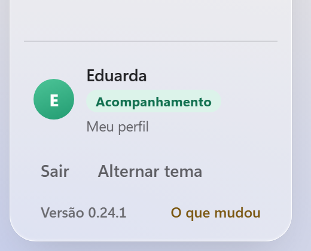
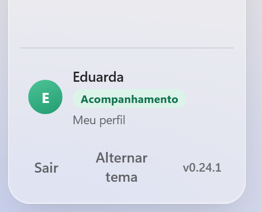
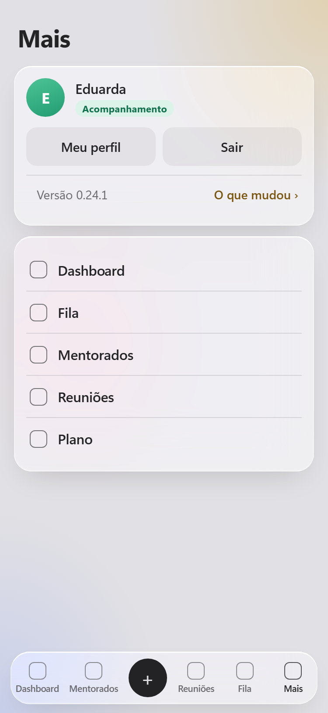
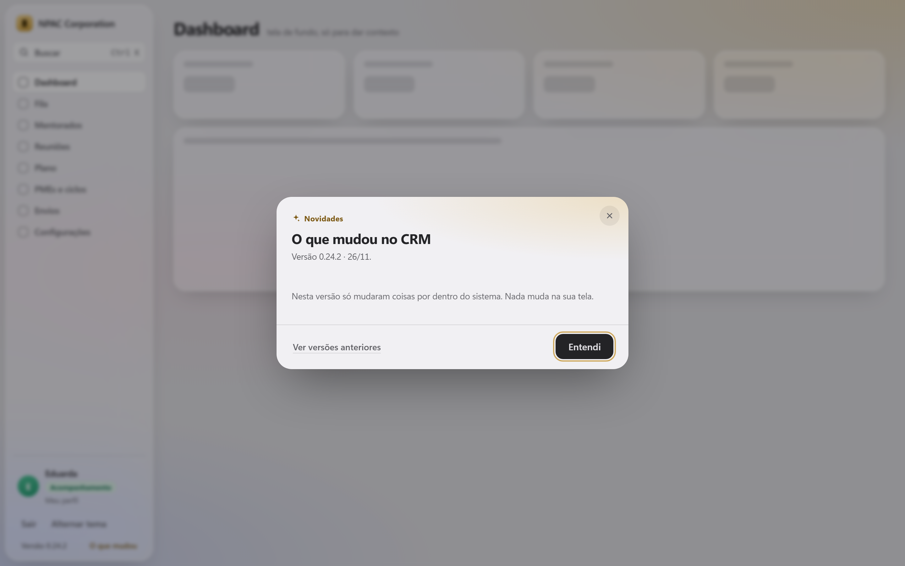

Cada decisão tem a opção A (a que eu recomendo, com a borda dourada) e a B. As imagens saíram do protótipo, com as mudanças reais de 25/11.
No computador, embaixo da barra lateral, perto do Sair. Clicar no número abre o histórico de novidades.

Tudo cabe numa linha e o “O que mudou” deixa claro que dá para clicar.

Não cabe: o “Alternar tema” quebra em duas linhas. E “v0.24.1” sozinho não diz que é clicável.
A dúvida é o que acontece quando a mesma pessoa abre o CRM em outro aparelho. Exemplo com a Eduarda:
É a janela do update de hoje (0.24.1), com 3 mudanças do Acompanhamento.
↓ Passo 2 · à tarde, ela abre o CRM no celular

O celular já sabe que ela viu e abre direto, sem janela. Se ela quiser, toca em “O que mudou”.
A mesma janela aparece de novo, e de novo no tablet. Quem usa 2 ou 3 aparelhos lê o mesmo texto várias vezes.
As notas do GitHub são técnicas. O texto que a equipe lê fica num arquivo do projeto, uma linha por mudança. A dúvida é quem preenche esse arquivo.
Você só revisa. O texto nunca fica para depois, porque o PR já chega com ele.
// novidades.ts · versão 0.24.1 { titulo: '…você escreve…', texto: '…você escreve…', para: 'Acompanhamento', onde: '…você escreve…', }
Mais uma tarefa por versão para você. Em dia corrido, a janela sai vazia.
Exemplo: amanhã sai a 0.24.2, que só deixa o banco mais rápido. Nada muda na tela de ninguém. A janela abre ou não?
A Eduarda entra e trabalha normal. O rodapé passa a mostrar 0.24.2.
Assim, quando a janela aparece, é porque tem algo para ela ler.

Um clique a mais para ler “nada mudou”. Com o tempo, a equipe passa a fechar sem ler, inclusive quando tem novidade de verdade.